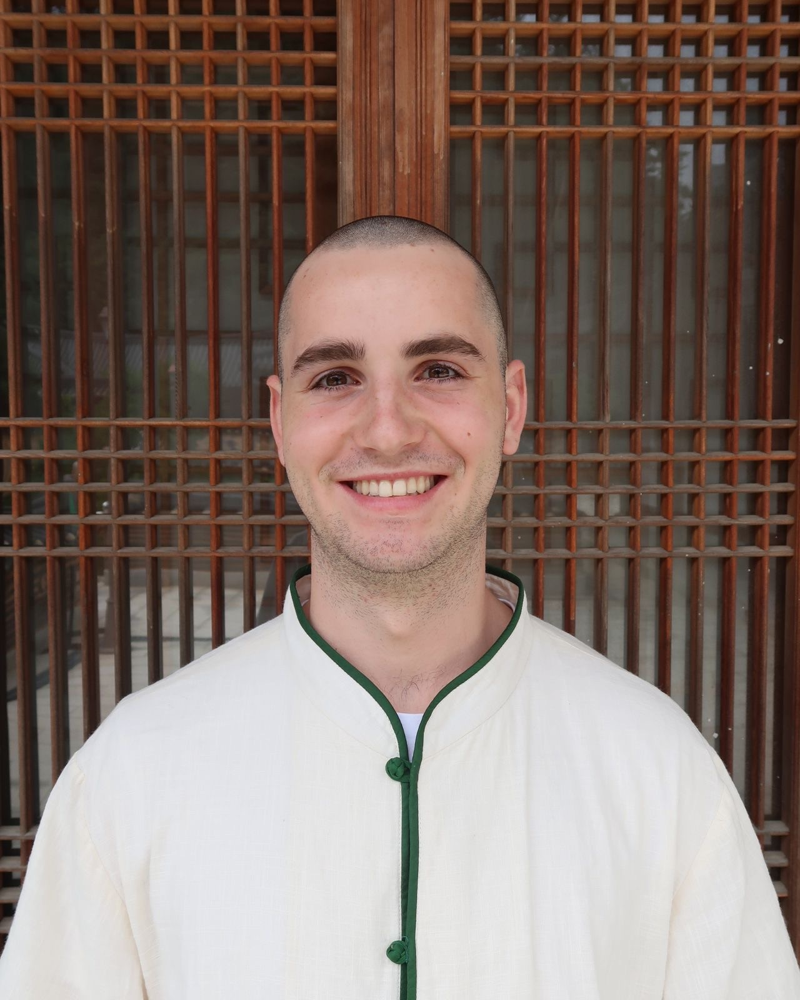
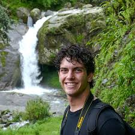

About the BMC
Mission
The Brown Meditation Community (BMC) is a student-run group that fosters well-being and community through different contemplative practices. The BMC is committed to maintaining a maximally inclusive and accessible environment that prioritizes compassion, self-care, and self-inquiry. People of all backgrounds and experience levels are welcome at any event. The BMC is non-denominational and is informed by a multitude of meditative practices from a variety of religious traditions. To credit and respect these traditions, the BMC strives to speak about, rather than for, these traditions. Navigating contemplative practice in the BMC is complex and imperfect; we always welcome dialogue about the intent, methods, and impacts of appropriating meditative practices from their indigenous contexts. The BMC hopes to share meditation and engage in contemplative experience with attention to context as much as content.
Core Values
Service
We act with care and intention to support each other and the community.
Compassion
We foster empathy and understanding in all our interactions and practices.
Openness
We welcome all experiences, perspectives, and people with curiosity and respect.
Mindfulness
We cultivate presence and awareness in our actions and reflections.
Offerings
Thursday Night Sits
Thursday night sits are BMC’s signature event. The community meets every Thursday night at the Manning Chapel (See calendar for timing). We connect, meditate, reflect, drink tea, and chat. A facilitator guides meditations, no prior experience required.
Morning Sits
Every weekday from 8-8:30am join us for morning meditations in the Manning Chapel. A facilitator guides meditations for twenty minutes, followed by a short discussion.
Yoga
Yoga occurs every Sunday at the Multipurpose room in the Sternlicht Commons (Wellness). Yoga is led by a certified yoga instructor.
Collaborations
BMC loves to collaborate with other organizations on campus for fun and meaningful activities. Prior collaborations have been with the Brown Outing Club, the Christian Mindfulness Club, and the Cooking Club. If you are part of another club and want to collaborate, send us an email!
Weekend Retreats
Weekend retreats are a special opportunity to practice meditation in a remote setting with the BMC. Retreats are usually 1-3 days at a remote retreat center. These are truly a special opportunity, and there is usually limited space, so be sure to stay up to date with BMC announcements so you can join us for our next one!
Facilitator

Rachel Wicker
Hi! My name is Rachel, and I am a Sophomore from Athens, Georgia studying English nonfiction. I love the BMC community and I’m so excited to be a facilitator this year. Outside of the BMC, I write for The Herald and enjoy reading and hiking.

Zoey McCarthy
Hi I’m Zoey and I’m a junior concentrating in psychology. You can find me at morning meditation, going for bike rides, or attempting to learn a new instrument. I have found the BMC to be a place for personal growth and meeting all kinds of new people.

Ronit Chakraborty
Hey, I’m Ronit! I’m a Junior from New Jersey studying Neuroscience and Contemplative Studies on the pre-med track. Our meditation retreats have been a really meaningful part of my college experience, and I’m very deeply grateful for this community and our practice. Outside of BMC, I also love singing, working out, and trying new food.

Charlie Kohl
Hey everyone! I’m Charlie, a sophomore from Holly Springs, North Carolina. I’ve been interested in meditation for a few years now, and I am currently particularly interested in Zen Buddhist meditation. I’m very grateful for the BMC community, and excited to see what great memories and meditations are in store for everyone involved.
Ethan Canfield
Hi I’m Ethan! I’m a junior from Houston, Tx studying Applied math-biology. I love our morning sits and have recently been getting into meditating outdoors. Outside of BMC, I write and edit for the Herald and love taking walks around Providence.

Isaac McDonald
Welcome! My name is Isaac, and I am a Senior from Salem, Oregon, studying Contemplative Studies and Entrepreneurship. The BMC has had a huge impact on my life, and I am so grateful to be a part of this truly special community. Other things I like: cooking, gym, running, hockey, and Buddhism.

Theo Weiman
Abroad in Amsterdam 🙏✈️